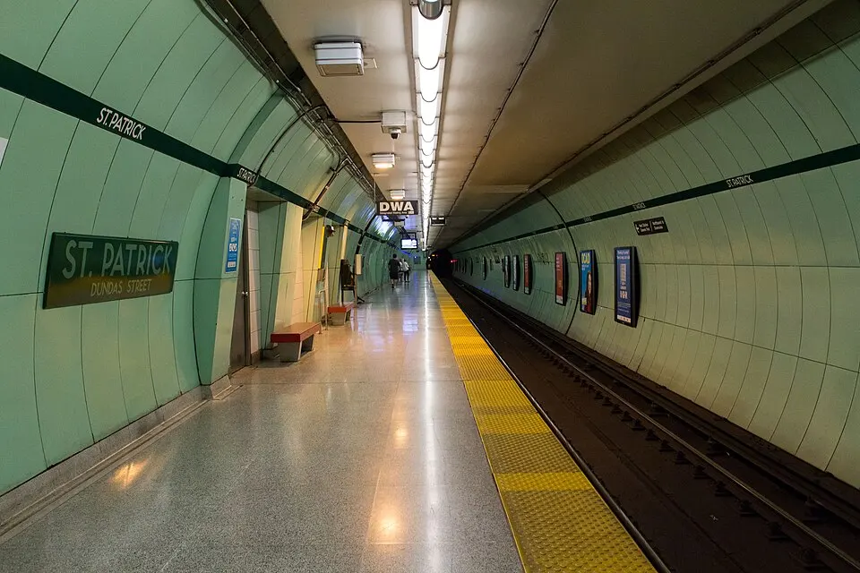

Signal
SignalStation atlas / St Patrick
Station history
St Patrick


Station history
The station opened in the tunnelled section of the University subway. Its curved platform walls originally carried painted station names.
A new entrance at 480 University Avenue brought sheltered stairs and elevator access to the station. It became the TTC’s 45th accessible subway station.